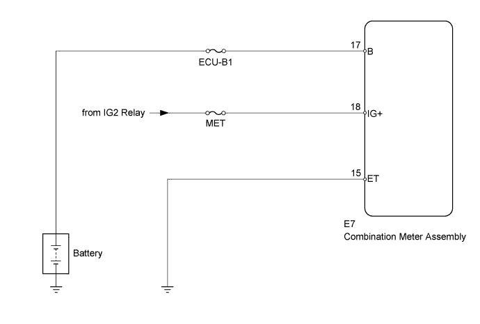
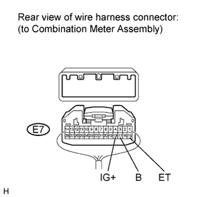

METER / GAUGE SYSTEM > Entire Combination Meter does not Operate |

| 1.INSPECT FUSE (MET, ECU-B1) |
Remove the MET and ECU-B1 fuses from the engine room relay block.
Measure the resistance according to the value(s) in the table below.
| Tester Connection | Condition | Specified Condition |
| MET fuse | Always | Below 1 Ω |
| ECU-B1 fuse |
|
| ||||
| OK | |
| 2.CHECK HARNESS AND CONNECTOR (COMBINATION METER ASSEMBLY - BATTERY AND BODY GROUND) |
 |
Disconnect the E7 meter connector.
Measure the resistance and voltage according to the value(s) in the tables below.
| Tester Connection | Condition | Specified Condition |
| E7-15 (ET) - Body ground | Always | Below 1 Ω |
| Tester Connection | Switch Condition | Specified Condition |
| E7-17 (B) - Body ground | Always | 11 to 14 V |
| E7-18 (IG+) - Body ground | Engine switch on (IG) |
| Result | Proceed to |
| NG | A |
| OK (w/ Multi-information Display) | B |
| OK (w/o Multi-information Display) | C |
|
| ||||
|
| ||||
| A | ||
| ||